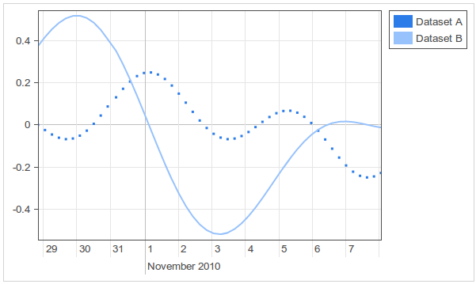

CHAP Links Library
CHAP Links Library is a web based visualization library for displaying graphs, networks, and timelines. The tools are developed as Google Visualization Charts for Javascript and GWT. Links Library is part of CHAP, the Common Hybrid Agent Platform.
The library contains the following tools:
Graph
The Graph is an interactive visualization chart to draw (measurement) data in time. You can freely move and zoom in the graph by dragging and scrolling in the window. The time scale on the axis is adjusted automatically, and supports scales ranging from milliseconds to years. The Graph is specially designed for handling large amounts of data.
|  |
Javascript
Download GWT |
Graph 3d
Graph3d is an interactive visualization chart to draw data in a three dimensional graph. You can freely move and zoom in the graph by dragging and scrolling in the window. Graph3d also supports animation of a graph.

|
Javascript
Download GWT(not yet implemented) |
Network
Links Network is an interactive chart to visualize networks. It allows creating nodes, links between the nodes, and interactive packages moving between nodes. Interaction can be real time or can be animated from a set of historical data. The visualization supports custom styles, colors, sizes, images, and more.

|
Javascript
Download GWT |
Timeline
The Timeline is an interactive visualization chart to visualize events in time. The events can take place on a single date, or have a start and end date (a range). You can freely move and zoom in the timeline by dragging and scrolling in the Timeline. Events can be created, edited, and deleted in the timeline. The time scale on the axis is adjusted automatically, and supports scales ranging from milliseconds to years.

|
Javascript
Download GWT |
TreeGrid
TreeGrid is a visualization which represents data in a hierarchical grid view. It is designed to handle large amouts of data, and has options for lazy loading. Items in the TreeGrid can contain custom HTML code. Information in one item can be spread over multiple columns, and can have action buttons on the right.

|
Javascript
Download GWT |